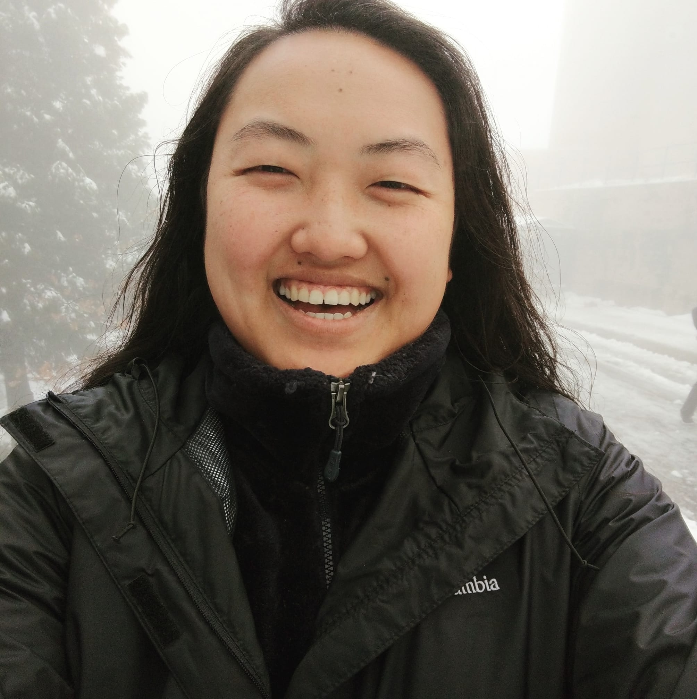

|  |
Mai MouaEngineer/Developer/Writer/Artist/Learner/Optimist I am an engineer, developer, writer, artist, and life learner.
|
| Dates | Work |
|---|---|
| Sep 2011 - Aug 2013 | Capital Projects Manager's Assistant at Cal Lutheran University, Thousand Oaks, CA |
| Nov 2015 - Jan 2016 | Staff Engineer at DirecTV, Los Angeles, CA |
| Jan 2016 - Current | Technical Services Management Specialist at AT&T, Los Angeles, CA |
| Dates | Experience |
|---|---|
| Aug 2011 - May 2015 | Studied at Cal Lutheran University, Thousand Oaks, CA |
| Aug 2012 - Feb 2013 | Surgery Desk Volunteer at Los Robles Hospital, Thousand Oaks, CA |
| Aug 2013 - Dec 2013 | Studied abroad at Hong Kong Baptist University, Hong Kong |
| Oct 2019 - Mar 2020 | Aquarist Volunteer at Aquarium of the Pacific, Long Beach, CA |
| October 2020 | Blockchain Nanodegree |
| Linux | ⭐⭐⭐⭐⭐ |
| Drawing | ⭐⭐⭐⭐⭐ |
| Web Development | ⭐⭐⭐⭐ |
| Blockchain Technologies | ⭐⭐⭐ |
| Tech Support | ⭐⭐⭐⭐ |
| Jellyfish and Mudskipper Expert | 🐟🐟🐟🐟 |